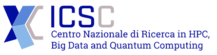

ASTRAI
Welcome to the ASTRAI Website
This website introduces the ASTRAI project — what it is, what it does, and why it matters. You’ll also find access to the project’s main outputs, from datasets and AI models to source code and publications. Explore our resources to dive into cutting-edge tools for supernova characterisation and synthetic data generation.
Everything is open and accessible. If you’d like to download datasets or code, we’ll just ask you to fill out a short form with your affiliation and intended use.
Find collaborations and related work with references and external links.
Discover the Project
Learn in detail about ASTRAI, its scientific goals, and the motivation behind using Artificial Intelligence to study supernovae. Understand how the project combines astrophysical models with advanced machine learning techniques to create new opportunities for research and discovery.
Learn MoreAccess Resources
Browse a growing collection of datasets, source code, and publications as they are released. These resources are designed to support both the astrophysics and AI communities, offering practical tools for analysis, experimentation, and reproducible science.
ExploreCheck Usage Terms
Find clear and transparent information about licensing conditions, recommended citation formats, and guidelines for the responsible reuse of materials. These terms help ensure that ASTRAI’s outputs are properly credited and can be applied ethically in future research.
View TermsAbout the ASTRAI Project
ASTRAI is a research initiative dedicated to the automatic characterisation of supernovae, combining physics‑based modelling with modern machine learning. Supernovae shape the chemical enrichment of galaxies, influence stellar evolution, and serve as distance indicators, yet their study is challenged by complex explosion mechanisms and irregular observations.
To address these challenges, ASTRAI integrates semi-analytical models of supernova physics with advanced AI methods, creating synthetic datasets that reproduce realistic light curves, temperatures, and velocities. These resources enable the training and validation of machine learning models capable of extracting physical parameters from both real and simulated data, even under observational uncertainty.
The project delivers openly accessible tools: curated datasets, generative frameworks, parameter-recovery algorithms, and source code repositories, all provided under transparent licensing terms. In this way, ASTRAI contributes to reproducible science and accelerates discovery for both the astrophysics and AI communities.
🧠 AI for Transients
Models tailored to supernova light curves and spectra that infer meaningful physical parameters from sparse, noisy and unevenly sampled data.
🔬 Physics‑Informed Modelling
Semi‑analytical descriptions of explosion and ejecta evolution that help constrain temperatures, velocities and luminosities across different supernova classes.
🧪 High‑Fidelity Synthetic Data
Generative pipelines that create realistic light curves and related observables, bridging gaps in coverage and strengthening training and evaluation.
Project outputs
- Physical models and reference implementations for supernova light‑curve evolution.
- Synthetic datasets with metadata for training, benchmarking and method comparison.
- Inference and characterisation tools to estimate physical parameters from real and synthetic data.
- Reproducible source code with documentation and examples under clear licensing terms.
- Citation and licensing guidance enabling responsible and ethical reuse.
Who it’s for
Astrophysics and AI research groups, observatories and survey teams, and anyone developing tools for time‑domain astronomy.
How we share
Resources are openly available for non‑commercial research. To access downloads, we ask for affiliation and intended use; commercial use requires a separate licence.
Ownership, collaboration & funding
ASTRAI is conceived and developed under the leadership of Koexai S.r.l., which coordinates all project activities and ensures their delivery. The project benefits from the valuable scientific input of Prof. Maria Letizia Pumo and her team at the University of Catania, who contribute expertise in physical modelling and act as scientific referees, nominated by INAF (Spoke 3 leader).
ASTRAI has been selected and funded under the ICSC – Centro Nazionale di Ricerca in HPC, Big Data e Quantum Computing, as part of the PNRR, and supported by the European Union – NextGenerationEU.

- 
Resource Sharing & Downloads
Access our collection of research outputs, including datasets, source code, models and documentation. All resources are provided with clear licensing terms and citation guidelines.
Physical Models
Semi‑analytical models for supernova explosion dynamics, light‑curve evolution and parameter‑space exploration.
Request AccessSynthetic Datasets
Realistic supernova light curves with associated observables and metadata generated through our validated AI pipeline.
Download DatasetAI & ML Models
Trained models for parameter estimation, generative frameworks and characterisation pipelines optimised for astronomical data.
Access ModelsSource Code
Source repositories with documentation, installation guides and usage examples under dual‑licence terms.
View CodeLicensing & Citation
Dual‑Licence Model:
- Open for non‑commercial scientific use
- Commercial use requires a separate licensing agreement
Required Citation:
“ASTRAI has been selected and funded under the ICSC – Centro Nazionale di Ricerca in HPC, Big Data e Quantum Computing, as part of the PNRR, and supported by the European Union – NextGenerationEU.”
Contact & Acknowledgements
Project Contact
For resource access requests, collaboration inquiries, or technical questions:
info@koexai.comOwnership & Scientific Referees
Koexai S.r.l. — Project lead and coordinating body.
University of Catania (Prof. Maria Letizia Pumo) — Scientific referee and contributor, nominated by INAF (Spoke 3 leader).